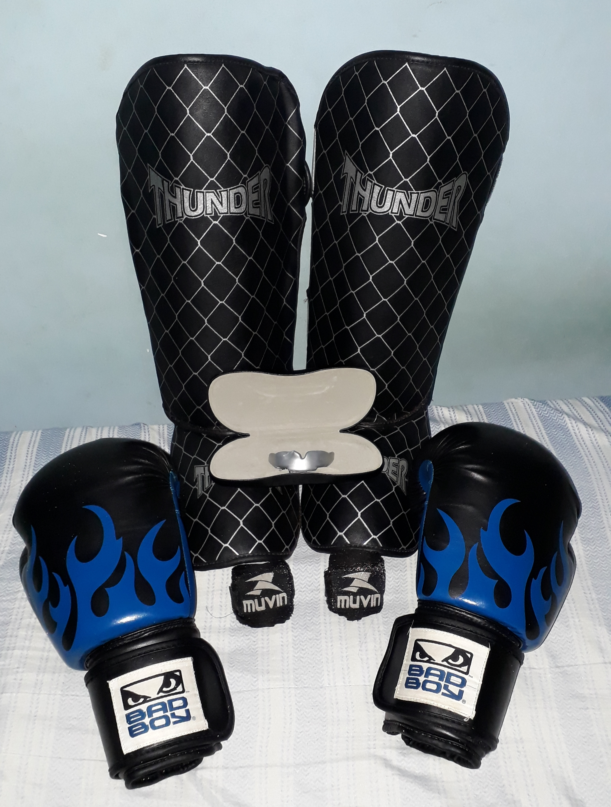
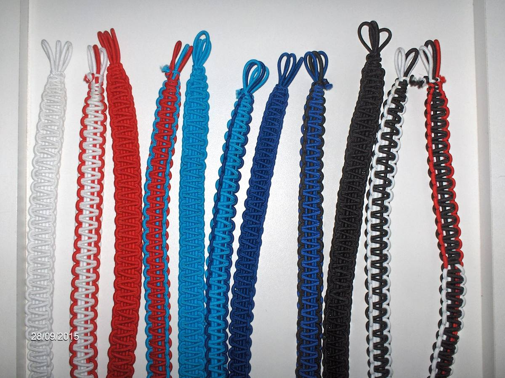

Equipamento e graduação Equipamento e graduação
Equipamento e graduação Equipamento e graduação 
No boxe tailandês, uma boa luva é fundamental para proteger os dedos, mãos e punhos.
Sob as luvas, bandagens garantem ainda mais a integridade do praticante. No caso dos
iniciantes, caneleiras também são indicadas. O atleta que vai para o ringue precisa
ainda de protetor bucal, cotoveleira, protetor genital e, no caso de treinos com
sparring, capacetes. Não podemos esquecer ainda o saco de pancadas e o thai pad. Como
vestimenta, usam-se shorts e, no caso das mulheres, tops.
• Saco de pancadas
• Thai pad
• Short
• Luvas
• Luva bate-saco, que deixa os dedos expostos
• Protetor bucal
• Coquilha ou protetor genital, para homens
• Top justo, para mulheres
• Caneleira
• Cotoveleira
• Ataduras, faixas ou bandagens
• Capacete
• Mongkon, espécie de arco de pano que o aluno recebe quando está
pronto para ser um lutador profissional
• Kruang, paprachiat ou prajied
• Phuang Malai, guirlanda de flores para dar sorte luta
• Grau branco
• Grau branco com vermelho
• Grau vermelho
• Grau vermelho com azul claro
• Grau azul claro
• Grau azul claro com azul escuro
• Grau azul escuro (instrutor)
• Grau azul escuro com preto (instrutor máster)
• Grau preto (professor)
• Kruang preto e branco (mestre)
• Kruang preto, branco e vermelho (grão mestre)
